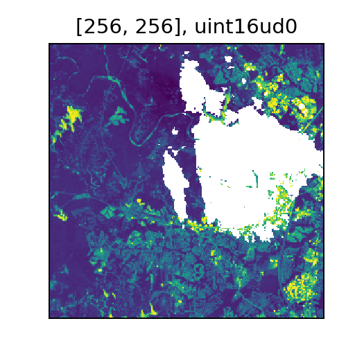
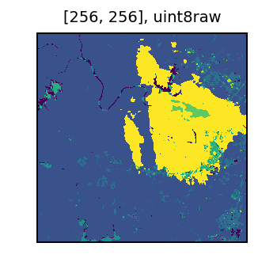

“NoData” Handling
What is NoData?
In raster operations, the preservation and correct processing of missing observations is very important. In most DataFrames and scientific computing, the idea of missing data is expressed as a null or NaN value. However, a great deal of raster data is stored for space efficiency, which typically leads to use of integral values with a “sentinel” value designated to represent missing observations. This sentinel value varies across data products and is usually called the “NoData” value.
RasterFrames provides a variety of functions to inspect and manage NoData within tiles.
Cell Types
To understand how NoData is handled in RasterFrames, we first need to understand the different underlying types of data called cell types. RasterFrames cell types are GeoTrellis CellTypes, so the GeoTrellis documentation is a valuable resource on how these are defined.
The CellType class from the rf_types submodule allows us to create a representation of any valid cell type. There are convenience methods to create instances for a variety of basic types.
from pyrasterframes.rf_types import CellType
CellType.bool()
CellType.int8()
CellType.uint8()
CellType.int16()
CellType.uint16()
CellType.int32()
CellType.float32()
CellType.float64()
We can also inspect the cell type of a given tile or proj_raster column.
spark.read.raster('https://s22s-test-geotiffs.s3.amazonaws.com/luray_snp/B02.tif') \
.select(rf_cell_type('proj_raster')).distinct().show()
| rf_cell_type(proj_raster) |
|---|
| [uint16raw] |
Understanding Cell Types and NoData
We can use the methods on the CellType class to learn more about a specific cell type. Let’s consider the cell type of our sample data above.
ct = CellType('uint16raw')
ct, ct.is_floating_point(), ct.has_no_data()
(uint16raw, False, False)
We can see that for the above data source, there is no defined NoData value. This means that each value is interpreted as a valid observation. Often such data is meant to be combined with another band indicating the quality of observations at each location. The lack of NoData is indicated by the raw at the end of the type name. Consider for contrast the uint16 cell type.
from pyrasterframes.rf_types import CellType
ct = CellType('uint16')
ct, ct.is_floating_point(), ct.has_no_data(), ct.no_data_value()
(uint16, False, True, 0)
In this case, the minimum value of 0 is designated as the NoData value. For integral-valued cell types, the NoData is typically zero, the maximum, or the minimum value for the underlying data type. The NoData value can also be a user-defined value. In that case the value is designated with ud.
CellType.uint16().with_no_data_value(99).cell_type_name
'uint16ud99'
Floating point types have NaN as the NoData value by default. However, a user-defined NoData can be set.
print(CellType.float32().no_data_value())
print(CellType.float32().with_no_data_value(-99.9).no_data_value())
nan
-99.9
Masking
Let’s continue the example above with Sentinel-2 data. Band 2 is blue and has no defined NoData. The quality information is in a separate file called the scene classification (SCL), which delineates areas of missing data and probable clouds. For more information on this, see the Sentinel-2 algorithm overview. Figure 3 tells us how to interpret the scene classification. For this example, we will exclude NoData, defective pixels, probable clouds, and cirrus clouds: values 0, 1, 8, 9, and 10.

Credit: Sentinel-2 algorithm overview
The first step is to create a catalog with our band of interest and the SCL band. We read the data from the catalog, so the blue band and SCL tiles are aligned across rows.
from pyspark.sql import Row
blue_uri = 'https://s22s-test-geotiffs.s3.amazonaws.com/luray_snp/B02.tif'
scl_uri = 'https://s22s-test-geotiffs.s3.amazonaws.com/luray_snp/SCL.tif'
cat = spark.createDataFrame([Row(blue=blue_uri, scl=scl_uri),])
unmasked = spark.read.raster(catalog=cat, catalog_col_names=['blue', 'scl'])
unmasked.printSchema()
root
|-- blue_path: string (nullable = false)
|-- scl_path: string (nullable = false)
|-- blue: struct (nullable = true)
| |-- tile_context: struct (nullable = false)
| | |-- extent: struct (nullable = false)
| | | |-- xmin: double (nullable = false)
| | | |-- ymin: double (nullable = false)
| | | |-- xmax: double (nullable = false)
| | | |-- ymax: double (nullable = false)
| | |-- crs: struct (nullable = false)
| | | |-- crsProj4: string (nullable = false)
| |-- tile: tile (nullable = false)
|-- scl: struct (nullable = true)
| |-- tile_context: struct (nullable = false)
| | |-- extent: struct (nullable = false)
| | | |-- xmin: double (nullable = false)
| | | |-- ymin: double (nullable = false)
| | | |-- xmax: double (nullable = false)
| | | |-- ymax: double (nullable = false)
| | |-- crs: struct (nullable = false)
| | | |-- crsProj4: string (nullable = false)
| |-- tile: tile (nullable = false)
unmasked.select(rf_cell_type('blue'), rf_cell_type('scl')).distinct().show()
| rf_cell_type(blue) | rf_cell_type(scl) |
|---|---|
| [uint16raw] | [uint8raw] |
Drawing on local map algebra techniques, we will create new tile columns that are indicators of unwanted pixels, as defined above. Since the mask column is an integer type, the addition is equivalent to a logical or, so the boolean true values are 1.
from pyspark.sql.functions import lit
mask_part = unmasked.withColumn('nodata', rf_local_equal('scl', lit(0))) \
.withColumn('defect', rf_local_equal('scl', lit(1))) \
.withColumn('cloud8', rf_local_equal('scl', lit(8))) \
.withColumn('cloud9', rf_local_equal('scl', lit(9))) \
.withColumn('cirrus', rf_local_equal('scl', lit(10)))
one_mask = mask_part.withColumn('mask', rf_local_add('nodata', 'defect')) \
.withColumn('mask', rf_local_add('mask', 'cloud8')) \
.withColumn('mask', rf_local_add('mask', 'cloud9')) \
.withColumn('mask', rf_local_add('mask', 'cirrus'))
one_mask.select(rf_cell_type('mask')).distinct().show()
| rf_cell_type(mask) |
|---|
| [bool] |
Because there is not a NoData already defined, we will choose one. In this particular example, the minimum value is greater than zero, so we can use 0 as the NoData value.
one_mask.agg(rf_agg_stats('blue').min.alias('blue_min')).show()
| blue_min |
|---|
| 3.0 |
We can now construct the cell type string for our blue band’s cell type, designating 0 as NoData.
blue_ct = one_mask.select(rf_cell_type('blue')).distinct().first()[0][0]
masked_blue_ct = CellType(blue_ct).with_no_data_value(0)
masked_blue_ct.cell_type_name
'uint16ud0'
Now we will use the rf_mask_by_value to designate the cloudy and other unwanted pixels as NoData in the blue column by converting the cell type and applying the mask.
with_nd = rf_convert_cell_type('blue', masked_blue_ct)
masked = one_mask.withColumn('blue_masked',
rf_mask_by_value(with_nd, 'mask', lit(1))) \
.drop('nodata', 'defect', 'cloud8', 'cloud9', 'cirrus', 'blue')
We can verify that the number of NoData cells in the resulting blue_masked column matches the total of the boolean mask tile to ensure our logic is correct.
masked.select(rf_no_data_cells('blue_masked'), rf_tile_sum('mask')).show(10)
| rf_no_data_cells(blue_masked) | rf_tile_sum(mask) |
|---|---|
| 4475 | 4475.0 |
| 0 | 0.0 |
| 0 | 0.0 |
| 0 | 0.0 |
| 5 | 5.0 |
| 29 | 29.0 |
| 186 | 186.0 |
| 1835 | 1835.0 |
| 3 | 3.0 |
| 2 | 2.0 |
It’s also nice to view a sample. The white regions are areas of NoData.
sample = masked.orderBy(-rf_no_data_cells('blue_masked')).select(rf_tile('blue_masked'), rf_tile('scl')).first()
display(sample[0])

And the original SCL data. The bright yellow is a cloudy region in the original image.
display(sample[1])

NoData and Local Arithmetic
Let’s now explore how the presence of NoData affects local map algebra operations. To demonstrate the behavior, lets create two tiles. One tile will have values of 0 and 1, and the other will have values of just 0.
tile_size = 100
x = np.zeros((tile_size, tile_size), dtype='int16')
x[:,tile_size//2:] = 1
x = Tile(x)
y = Tile(np.zeros((tile_size, tile_size), dtype='int16'))
rf = spark.createDataFrame([Row(x=x, y=y)])
print('x')
display(x)
x

print('y')
display(y)
y

Now, let’s create a new column from x with the value of 1 changed to NoData. Then, we will add this new column with NoData to the y column. As shown below, the result of the sum also has NoData (represented in white). In general for local algebra operations, Data + NoData = NoData.
masked_rf = rf.withColumn('x_nd', rf_mask_by_value('x', 'x', lit(1)) )
masked_rf = masked_rf.withColumn('x_nd_y_sum', rf_local_add('x_nd', 'y'))
row = masked_rf.collect()[0]
print('x with NoData')
display(row.x_nd)
x with NoData

print('x with NoData plus y')
display(row.x_nd_y_sum)
x with NoData plus y
 To see more information about possible operations on tile columns, see the local map algebra page and function reference.
To see more information about possible operations on tile columns, see the local map algebra page and function reference.
Changing a Tile’s NoData Values
One way to mask a tile is to make a new tile with a user defined NoData value. We will explore this method below. First, lets create a DataFrame from a tile with values of 0, 1, 2, and 3. We will use numpy to create a 100x100 tile with vertical bands containing values 0, 1, 2, and 3.
tile_size = 100
x = np.zeros((tile_size, tile_size), dtype='int16')
# setting the values of the columns
for i in range(4):
x[:, i*tile_size//4:(i+1)*tile_size//4] = i
x = Tile(x)
rf = spark.createDataFrame([Row(tile=x)])
display(x)

First, we mask the value of 1 by making a new tile column with the user defined cell type ‘uint16ud1’. Then, we mask out the value of two by making a tile column with the cell type ‘uint16ud2’.
def get_nodata_ct(nd_val):
return CellType('uint16').with_no_data_value(nd_val)
masked_rf = rf.withColumn('tile_nd_1',
rf_convert_cell_type('tile', get_nodata_ct(1))) \
.withColumn('tile_nd_2',
rf_convert_cell_type('tile_nd_1', get_nodata_ct(2))) \
collected = masked_rf.collect()
Let’s look at the new tiles we created. The tile named tile_nd_1 has the 1 values masked out as expected.
display(collected[0].tile_nd_1)

And the tile named tile_nd_2 has the values of 1 and 2 masked out. This is because we created the tile by setting a new user defined NoData value to tile_nd_1, and the values previously masked out in tile_nd_1 stayed masked when creating tile_nd_2.
display(collected[0].tile_nd_2)

Combining Tiles with Different Data Types
RasterFrames supports having tile columns with different cell types in a single DataFrame. It is important to understand how these different cell types interact.
Let’s first create a RasterFrame that has columns of float and int cell type.
x = Tile((np.ones((100, 100))*2), CellType.float64())
y = Tile((np.ones((100, 100))*3), CellType.int32())
rf = spark.createDataFrame([Row(x=x, y=y)])
rf.select(rf_cell_type('x'), rf_cell_type('y')).distinct().show()
| rf_cell_type(x) | rf_cell_type(y) |
|---|---|
| [float64] | [int32] |
When performing a local operation between tile columns with cell types int and float, the resulting tile cell type will be float. In local algebra over two tiles of different “sized” cell types, the resulting cell type will be the larger of the two input tiles’ cell types.
rf.select(
rf_cell_type('x'),
rf_cell_type('y'),
rf_cell_type(rf_local_add('x', 'y')).alias('xy_sum'),
).show(1)
| rf_cell_type(x) | rf_cell_type(y) | xy_sum |
|---|---|---|
| [float64] | [int32] | [float64] |
Combining tile columns of different cell types gets a little trickier when user defined NoData cell types are involved. Let’s create two tile columns: one with a NoData value of 1, and one with a NoData value of 2 (using our previously defined get_nodata_ct function).
x_nd_1 = Tile((np.ones((100, 100))*3), get_nodata_ct(1))
x_nd_2 = Tile((np.ones((100, 100))*3), get_nodata_ct(2))
rf_nd = spark.createDataFrame([Row(x_nd_1=x_nd_1, x_nd_2=x_nd_2)])
Let’s try adding the tile columns with different NoData values. When there is an inconsistent NoData value in the two columns, the NoData value of the right-hand side of the sum is kept. In this case, this means the result has a NoData value of 1.
rf_nd_sum = rf_nd.withColumn('x_nd_sum', rf_local_add('x_nd_2', 'x_nd_1'))
rf_nd_sum.select(rf_cell_type('x_nd_sum')).distinct().show()
| rf_cell_type(x_nd_sum) |
|---|
| [uint16ud1] |
Reversing the order of the sum changes the NoData value of the resulting column to 2.
rf_nd_sum = rf_nd.withColumn('x_nd_sum', rf_local_add('x_nd_1', 'x_nd_2'))
rf_nd_sum.select(rf_cell_type('x_nd_sum')).distinct().show()
| rf_cell_type(x_nd_sum) |
|---|
| [uint16ud2] |
NoData Values in Aggregation
Let’s use the same tile as before to demonstrate how NoData values affect tile aggregations.
tile_size = 100
x = np.zeros((tile_size, tile_size))
for i in range(4):
x[:, i*tile_size//4:(i+1)*tile_size//4] = i
x = Tile(x, CellType.int16())
rf = spark.createDataFrame([Row(tile=x)])
display(x)

First we create the two new masked tile columns as before. One with only the value of 1 masked, and the other with and values of 1 and 2 masked.
masked_rf = rf.withColumn('tile_nd_1',
rf_convert_cell_type('tile', get_nodata_ct(1))) \
.withColumn('tile_nd_2',
rf_convert_cell_type('tile_nd_1', get_nodata_ct(2)))
The results of rf_tile_sum vary on the tiles that were masked. This is because any cells with NoData values are ignored in the aggregation. Note that tile_nd_2 has the lowest sum, since it has the fewest amount of data cells.
masked_rf.select(rf_tile_sum('tile'), rf_tile_sum('tile_nd_1'), rf_tile_sum('tile_nd_2')).show()
| rf_tile_sum(tile) | rf_tile_sum(tile_nd_1) | rf_tile_sum(tile_nd_2) |
|---|---|---|
| 15000.0 | 12500.0 | 7500.0 |